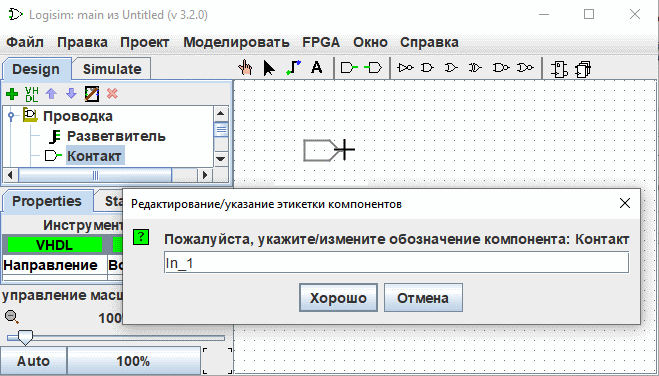

Самопронумерованные этикетки
Эта опция позволяет размещать компоненты с самонумерованными метками, например, Led_1, Led_2... . Чтобы использовать ее, действуйте следующим образом :
Выберите инструмент в Панель проводника, например Pin, и переместите его на рабочую поверхность, и перед тем, как щелкнуть, чтобы бросить, нажмите клавишу L. Введите имя метки, заканчивающееся на цифру, например "In_1".

С этого момента, когда вы уроните компоненты этого типа, они будут автоматически помечены приращением. Когда опция активирована, тень компонентов перед их размещением окрашивается в розовый цвет.
Эту опцию можно активировать для разных компонентов одновременно.

Для деактивации действуйте так же, как и для активации, но используйте ключ A. Если активирована самомаркировка на компонентах другого типа. Вы должны деактивировать его индивидуально для каждого типа компонентов.
Ключи и связанные с ними функции
L : Активируйте функцию и определите/измените наклейку.
T : Изменение видимости этикетки
H : Установите видимость этикетки на false (скрыть)
V : Установить видимость этикетки в значение true (отображение)
A : Заканчивает функцию самонамера этикеток.
Далее: Размещение компонентов в матрице.